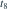
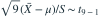

正态总体均值为  ，方差未知。样本容量为 9，
，方差未知。样本容量为 9， 以 8 为分母。统计量
以 8 为分母。统计量  服从什么分布？
服从什么分布？
，方差未知。样本容量为 9， 以 8 为分母。统计量 服从什么分布？- A

- B
- C

- D

我已思考，展开答案与解析
正确答案：A
- 由正态样本均值与样本方差独立，

。
易错提醒把未知总体标准差替换成样本标准差后，不再精确服从标准正态。
数学三·概率统计基础专题 · 数学三概率统计基础专题·原创第33题
按数学三常见概率统计知识点原创；不是历年真题或教材原题。